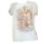

Album Deep Dive

#1: Around The Fur - Deftones ★★★★★★★★☆☆
This album marked my introduction to nu-metal and alternative metal. I remember hearing mascara for the first time in elementary school and it totally left a stain on a corner of my music taste, evolving all the way to one of my other favorite bands; mannequin pussy. The dreamy yet heavy production, combined with Chino Moreno's awesome and gritty vocals, creates this atmosphere that feels both aggressive and beautiful. It shaped how I understand musicality in punk-leaning genres.

#2: Swimming - Mac Miller ★★★★★★★★★★
Swimming totally captures vulnerability and raw emotion in a way few albums do. I remember going through a strong identity crisis and inability to express myself in my middle school years. Hiding in the closet, while also struggling to maintain confidence in my masculinity. Mac's deep and introspective lyricism mixed with jazzy and soulful production opened my eyes to hip-hop's softer, more emotional side, allowing me to feel more comfortable and masculine at the time. Genuinely loving something that society deemed masculine even if as "Small" as a music artist felt so securing to me. Mac Miller is just so incredibly charming and bless his little soul, I remember being so crushed when he passed. This album continues to resonate with me so so deeply. I remember in 8th grade hearing about Mac's passing and some asshole getting paint on my Mac Miller shirt that my older sister gave me the same week which ultimately felt like him dying again! But alas, everything is transformative I suppose.


#3: Pure Heroine - Lorde ★★★★★★★★★☆
Pure Heroine was groundbreaking for me as a young queer boy with a brand new ipod! Lorde's production, beats, and commentary on youth culture made me feel so understood. (I wanted to be emo!!!) Lol but seriously, her breaking from pop convention showed me the power of artistic vision and authenticity. Not to mention her only being SIXTEEN at the time of release! She felt like another big sister to me at times. I think lorde shaped another corner of my music taste for the better, allowing me to feel more confident in my more anxious and feminine music tastes. I have always been so obsessed with the song "Ribs" and how it perfectly captured the anxiety of growing up and the bittersweet nature of living. It was like she was speaking directly to me, and it made me feel like I could create from that bottomless void of angst as well!.

#4: Hit Me Hard and Soft - Billie Eilish ★★★★★★★★★★
10/10 dear lord. My gay ass heard this the summer it released and was in the midsts of quite the depression I fear this album hit me so hard (pun intended) that I literally wrote a FORTY minute video essay on it that same summer. It single handedly carried me out of my own head and back into the swing of things. Music often has this power that I admire to adhere to any situation and generate such strong feelings that it can make you feel heard, seen, and accounted for. Thats power that Billie Eilish understands, and thrives off of! This album demonstrates the evolution of modern pop, Billies influence, and her own sound. Her intimate vocal style and Finneas's insanely genius production creates an unsettling sound that fits so right in my brain. I have always had a soft spot for Billie, I remember years back discovering ocean eyes on youtube on my tablet at 2 am, shocked that again, someone so young can be so passionate. Like lorde she not only influenced my taste, but also how I create, in understanding myself and what I can do to cope with my feelings. The album's exploration of pain and emotion in quietly powerful ways impacts me to this day mama!!!!.

#5: Ctrl - SZA ★★★★★★★★★★
Ohhhhhh Sza..Sza...Sza. Ctrl is a masterclass in contemporary R&B and soul. SZA's vocals, which are lightheartedly mocked online but regardless are acknowledged as beautiful and soulful just effortlessy carry you through the album while gently placing soul-crushing emotions in your lap. I dont play about her! the album's cohesive production, and her honest exploration of relationships and self-discovery creates a work that feels so so timeless and urgently modern??? The album's emotional depth is unmatched. Relationships are constantly redifined for our generation and she just nails that! She isnt afraid of the gritty honest vulnerable heights that letting someone know you romantically invites and that is so beautiful!

#6: Freetown Sound - Blood Orange ★★★★★★★★☆
Blood Orange is another artist that I wont ever forget discovering. I was watching this show that had just came out on HBO called We Are Who We Are which is this groundbreaking coming of age that felt so new at the time, not to mention I had the biggest crush on Jacck Dylan Grazer at the time but anyways I digress, in one of the most heart breaking scenes; the song "Time Will Tell" played and it altered the chemistry of my brain forever. Blood Orange's experimental approach to electronic, R&B, and ambient sound influenced my understanding of complexity and uniqueness in the industry . The album is vibrant, introspective, and layered with so much meaning! After I first listened it taught me to appreciate music that challenges my expectations and embraces having its own sound! Blood Orange does NOT get the recognition he deserves! He single handedly opened the door to helping me find black queer artists that I resonate with. I feel that he is a pivotal voice in Modern Queer Music! Fun Fact: He was formerly in a band called Test Icicles from 2004-2006 lol!

#7: Labyrinth (The Original Soundtrack) - David Bowie ★★★★★★★★☆☆
The movie Labrynth came out in 1986 and featured David Bowie's unforgettable(-bly hot) performance and music. He stars as this 80's singing rock villain in a fantasy wasteland that he rules over, featuring an amazingly large Labrynth of course. The soundtrack blends rock, new wave, and theatrical elements into this cluster of songs that are so fun and catchy, but also have this dark and whimsical vibe that perfectly fits the movie's tone! I was raised in quite the movie heavy household, with an appreciation for all genres that my parents grew up with, so when my Mom showed me this movie at like, 10, it left a very queer and experimental taste in my mouth. I admired Bowie's character Jareth in that movie for not being the typical Macho -Heteronormative villain like Gaston or Homelander which instantly gained my attention as a child. It also taught me to appreciate the soundtrack of a film. The song "As the world falls down" is one of the most beautifully composed and lyrical songs of that time and ours! If I played it for a crowd that didnt know of the movie, they wouldnt even guess it would be from such a film!

#8: Blonde - Frank Ocean ★★★★★★★★☆
Blonde is a meditation on longing, loss, and the passage of time. Frank Ocean's innovative production, abstract lyrics, and emotional vulnerability create an otherworldly listening experience. Much like Billie, every replay reveals new layers of meaning and emotion, as he is an artist who explores narrative and human exsistance through reltationships and examining the deeper meanings. A controersially queer black artist that I will always resonate with. His song Chanel is so so beautiful and used to make me turn red when I heard it as singing so passionately about a "guy" was so boundry pushing for him and for the industry, and for little me. He has a way of making you feel whatever he is singing so authentically, with excerpts of speech from nostalgic times we werent even there for, to melodies that you wouldnt normally place with themes he sings about. He is beautiful inside and out!

#9: COPINGMECHANISM - Willow ★★★★★★★★☆
Willow has a way of explorating her identity, trauma, and healing through her experimental sound. A blend of pop, punk and hard rock that also explores femenine energy. The album's dark, introspective production matched with vulnerable lyricism shows how unafraid to be raw and honest about pain and growth she is! This album introduced me to willow and her soud has never stopped evolving as she manages to keep her self un-tethered to a certain genre or aesthetic. As someone who appreciates a good switch up and exploration of aesthetic, and visual expression, I love her!

#10: Honeymoon - Lana Del Rey ★★★★★★★★★★
Lana del rey is such a complicated case for me ugh. Classic case of cunty white woman becomes the woman she hates in the eyes of fame and capatalism. The focus is not Lana pre-shift though. It's the Lana that I was introduced too by tumblr and girls in middle school that wanted to ask me if I was gay.Honeymoon captures this cinematic melancholy and romantic nostalgia that I dont think I will ever live through, nor do I want to. Lana's production choices, orchestral arrangements, and insane dreamy vocals create a world of vintage Americana and DOOMED, doomed, doomed romance. It's endlessly captivating and emotionally resonant with growing up and longing for love. For a while Lana Del reys Discography was my main squeeze, from her unreleased tracks to her beautifully written master albums, she will always have a special place in my queer big heart.